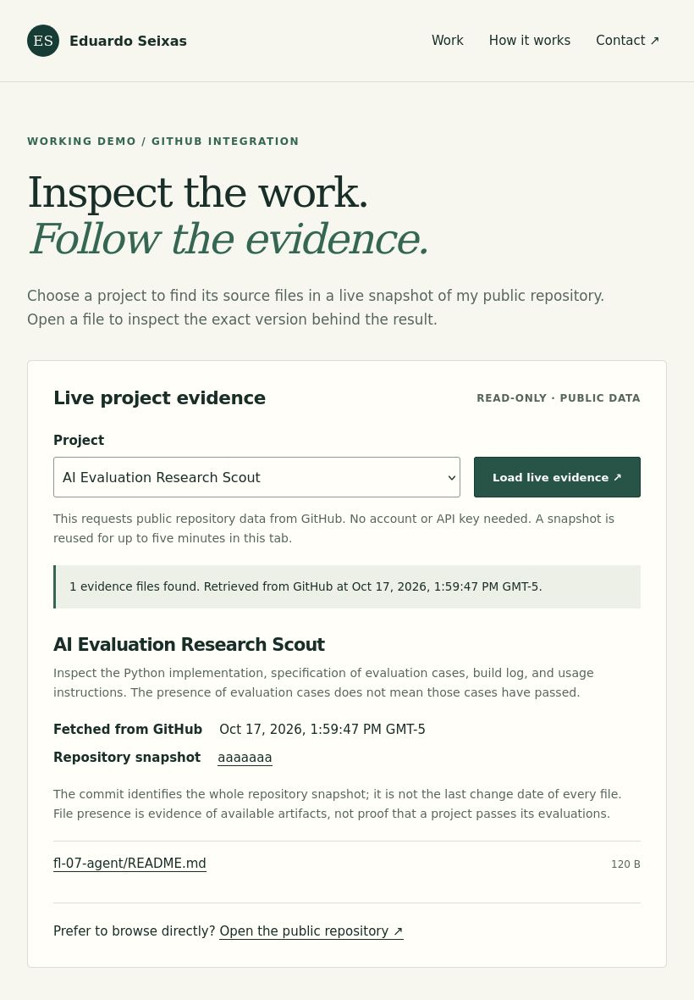
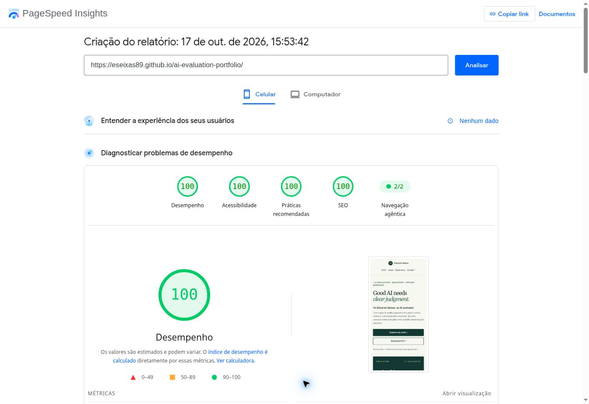

Break Your Own Site / Week 7 / 17 October 2026
Try the failures.
Keep the evidence.
I tested the portfolio's public navigation and live evidence explorer, reproduced edge cases, and fixed failures with AI assistance. This record separates corrected defects, existing safeguards, and remaining limits.
Try the live demo ↗ · Browser regression results (JSON) ↗ · Inspect the test script ↗
Scope and method
The only input form is a project selector. There is no free-text field, contact form, payment, account, or submission backend. An empty or garbage text submission is therefore not applicable. Instead, I tested empty and tampered selector values, unexpected API responses, network errors, and fast repeated submits. These failure tests ran in a local Chromium browser with intercepted API fixtures; they did not flood or alter GitHub.
A new browser check used Firefox 153 at 820 × 1180 CSS pixels. The Chromium fixture tests used a touch-enabled profile at that size. These are automated desktop/browser-profile checks, not a new physical-device session. The earlier owner-reported Samsung A15 check remains in the mobile log.
Fix-now findings — corrected
- Invalid selector values failed silently or reached inherited object properties. Empty and garbage values left the old ready message unchanged. Values such as
constructorreached a non-project property. The code now checks its own allowlisted keys, shows “Choose a valid project”, and sends no API request for invalid input. - Malformed JSON exposed a technical parse error. The fetch reader now shows an actionable “unreadable response” message and keeps the direct repository fallback.
- Null commit/tree payloads were mislabeled as connection failures. Explicit shape checks now identify an unexpected commit response or incomplete file list.
- Invalid tree entries could break rendering and remain cached for five minutes. The complete response is validated before caching. Null entries, unsupported entry types, and unsafe path segments are rejected. A corrected API response succeeds on retry without waiting for cache expiry.
- Negative file sizes were displayed as valid bytes. Only nonnegative safe integers are displayed as sizes; other values show “Size unavailable”.
- The homepage brand link had a redundant accessible-name override. The extended automated accessibility check flagged a visible-label/name mismatch. Removing the redundant override lets the visible name supply the link name; the decorative initials stay hidden from assistive technology.
- Social sharing lacked an image and canonical URLs. Public content pages now have unique titles/descriptions, canonical URLs, Open Graph and large-image Twitter metadata, plus a 1200 × 630 PNG preview. A sitemap lists the public HTML pages.
- A mistyped route lacked a portfolio-specific way back. A custom, noindex 404 page links to the homepage and demo, with absolute stylesheet URLs so nested missing paths can still render correctly.
Safeguards verified
All 23 browser scenarios passed after the fixes (12 passed against the baseline). The regression suite checks invalid values, null/malformed/truncated data, unsafe paths, negative sizes, text-only rendering of an HTML-like filename, HTTP 404/500/429/403, connection failure, timeout, no matching files, retry, double submit, cache reuse/expiry, and the no-JavaScript fallback. Timeout and cache expiry use the browser's simulated clock. Fixture timestamps are not real fetch-time measurements.
Two immediate submit events produced one fresh snapshot lookup: two requests, not four. Controls were disabled while pending and restored afterward. A repeated lookup reused the same snapshot; advancing the clock past five minutes triggered two fresh requests. File links stayed pinned to the validated commit. The direct repository link remains available in error states and without JavaScript.
Before-fix observations ↗ · After-fix observations ↗ · Navigation, layout, metadata, and link checks ↗

The final source check covered 13 HTML pages at five widths (65 layout checks), with no document-level horizontal overflow and no axe violations in the selected WCAG A/AA categories at 390 pixels. All local references and anchors in that check resolved. Homepage scrolling, the CV download, and the demo link were exercised in the browser.
After deployment: the live demo returned 7 Research Scout files, 2 workflow files, and 2 connector files at snapshot ee816ba, with the later selections reusing the cached snapshot. The repository link opened successfully. Public GET checks confirmed the deployed script matched the revised source, the preview and sitemap loaded, and a missing route returned the custom page with HTTP 404. Inspect the deployment checks ↗ · View the published review record ↗

Findability and speed
The homepage already had a descriptive title and meta description. The added canonical URL, social image metadata, and sitemap improve the information supplied to crawlers and link-preview services. Metadata and image delivery were checked; an actual WhatsApp or LinkedIn share-preview refresh has not been observed.

Search observation, 17 October 2026: a name search for “Eduardo Seixas” with AI evaluation returned professional profiles. Two focused queries — site:eseixas89.github.io/ai-evaluation-portfolio/ and "Eduardo Seixas" "eseixas89.github.io" — returned no results in the search tools used. This is a limited observation, not proof that every search engine has no index entry. Search-engine indexing remains a known limitation; no Search Console submission or ranking improvement is claimed.
Free public speed check: PageSpeed Insights report ↗, created 17 October 2026 at 15:53 BRT, before this hardening update. Mobile laboratory scores: 100 performance, 100 accessibility, 100 best practices, 100 SEO. FCP/LCP/Speed Index: 0.8 seconds; TBT: 0 ms; CLS: 0. The service used an emulated Moto G Power and slow 4G, Lighthouse 13.5.0. It reported no real-user field data. Scores are estimates for that run, not a guarantee or a before/after improvement.

Known limitations — accepted, not marked fixed
- GitHub API availability and public limits. The demo needs JavaScript and GitHub access. A timeout, quota limit, or service outage can block lookup. Clear errors and a repository link mitigate this dependency; they do not remove it.
- Search and social caches. The portfolio did not appear in the focused queries above. Crawlers and sharing platforms control discovery and refresh timing.
- External destinations. The fresh external-link check tested 43 destinations: 41 returned HTTP 200; PageSpeed returned 204 to HEAD but its report was successfully opened in the browser; LinkedIn returned HTTP 999 and requires a person to verify it before it is classified as broken. Remote pages can change or restrict automation. Email links open a mail client and do not demonstrate message delivery. No email was sent in testing.
- Evidence boundary. Finding project files proves artifact availability, not evaluation success. Research Scout still needs its separately documented live model run; this task does not claim to have executed it.
- Coverage boundary. Automated layout, accessibility, fixture, and browser checks do not cover every device, assistive technology, or future API response. A fresh human hardening review remains required.
Structured peer or mentor review
Reviewer: pending. Review date: pending. Decision and new findings: pending.
- Open the homepage, download the CV, follow a project/demo/repository link, and use a browser or device of your choice. Record that browser/device.
- Load evidence, click again quickly, change project, and return to the portfolio. Report any blocked action or confusing state.
- Read the fix-now list, inspect the linked evidence, and check the known limitations. Is any remaining issue serious enough to block sharing the site? State the issue and a reason, or explicitly say no blocker found.
- Confirm whether the fixes and evidence support passing this hardening checkpoint. Keep the actual response in the review record; do not replace it with an inferred approval.
Resumo para entrega
A parte técnica foi preparada com testes de entradas inválidas, falhas da API, clique duplo, cache, Firefox, links, metadados e velocidade. O relatório separa defeitos corrigidos, proteções verificadas e limites conhecidos. O PageSpeed público marcou 100 nas quatro categorias em uma execução de laboratório anterior às alterações. Ainda falta um mentor ou colega realizar e responder à revisão de robustez acima. O feedback anterior do Ruben tratava do conteúdo e não foi reutilizado como aprovação desta etapa.